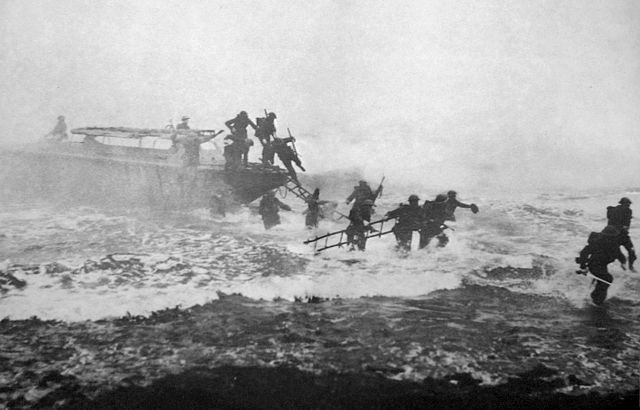

John Malcolm Thorpe Fleming Churchill, DSO & Bar, MC & Bar (16 September 1906 – 8 March 1996) was a British Army officer. Nicknamed "Fighting Jack Churchill" and "Mad Jack", he fought in the Second World War with a longbow, a basket-hilted Scottish broadsword, and a set of bagpipes.
Churchill was born in Colombo, British Ceylon,[1] to Alec Fleming Churchill (1876–1961), later of Hove, East Sussex, and Elinor Elizabeth, daughter of John Alexander Bond Bell, of Kelnahard, County Cavan, Ireland, and of Dimbula, Ceylon. Alec, of a family long settled at Deddington, Oxfordshire, had been District Engineer in the Ceylon Civil Service, in which his father, John Fleming Churchill (1829–1894), had also served.[1][3] Soon after Jack's birth, the family returned to Dormansland, Surrey, where his younger brother, Thomas Bell Lindsay Churchill (1907–1990), was born.[4] In 1910, the Churchills moved to British Hong Kong when Alec Churchill was appointed as Director of Public Works there; he also served as a member of the Executive Council. The Churchills' third and youngest son, Robert Alec Farquhar Churchill, later a lieutenant in the Royal Navy and Fleet Air Arm, was born in Hong Kong in 1911. The family returned to England in 1917.[5][6]
Churchill was educated at King William's College on the Isle of Man. He graduated from the Royal Military College, Sandhurst, in 1926 and served in Burma with the Manchester Regiment. He enjoyed riding a motorbike in Burma.[10][11]
Churchill left the army in 1936 and worked as a newspaper editor in Nairobi, Kenya, and as a male model.[10][12] He used his archery and bagpipe talents to play a small role in the 1924 film The Thief of Bagdad[13] and also appeared in the 1938 film A Yank at Oxford.[10] He took second place in the 1938 military piping competition at the Aldershot Tattoo.[14] In 1939, he represented Great Britain at the World Archery Championships in Oslo, where he got 26th place.[15][11]
Churchill resumed his commission after Nazi Germany invaded Poland in September 1939 and was assigned to the Manchester Regiment, which was sent to France in the British Expeditionary Force. In May 1940, Churchill and some of his men ambushed a German patrol near L'Épinette (near Richebourg, Pas-de-Calais). Churchill gave the signal to attack by raising his broadsword. A common story is that Churchill killed a German with a longbow in that action.[12] However, Churchill later said that his bows had been crushed by a lorry earlier in the campaign.[16] After fighting at Dunkirk, he volunteered for the Commandos. On one occasion, to a general who had commented on his weaponry, Churchill is said to have replied "Any officer who goes into action without his sword is improperly dressed."
Jack's younger brother, Thomas Churchill, also served with and led a commando brigade during the war.[17] After the war, Thomas wrote a book, Commando Crusade, that details some of the brothers' experiences during the war.[18] Their youngest brother, Robert, also known as 'Buster', served in the Royal Navy and was killed in action in 1942.[19]
Källa: Wikipedia